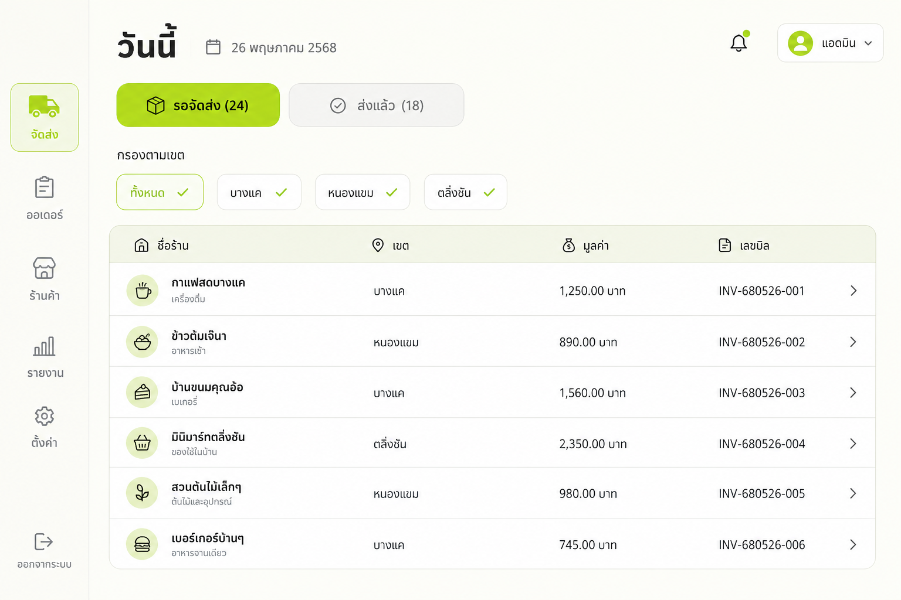
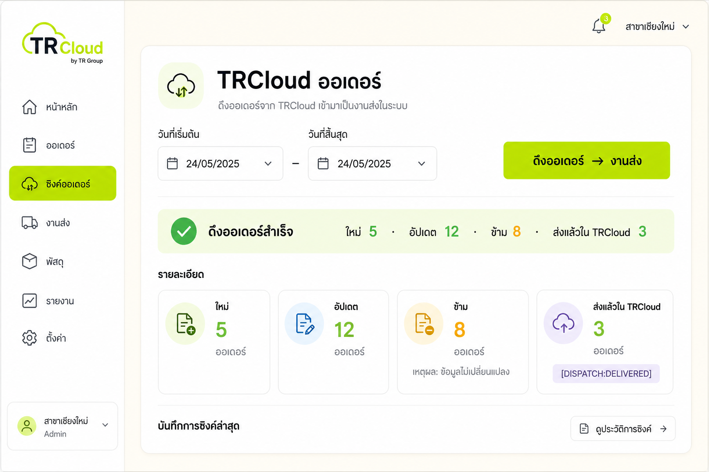
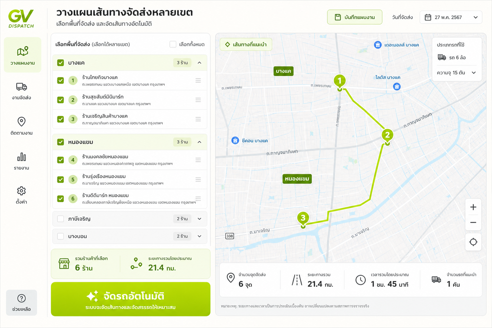
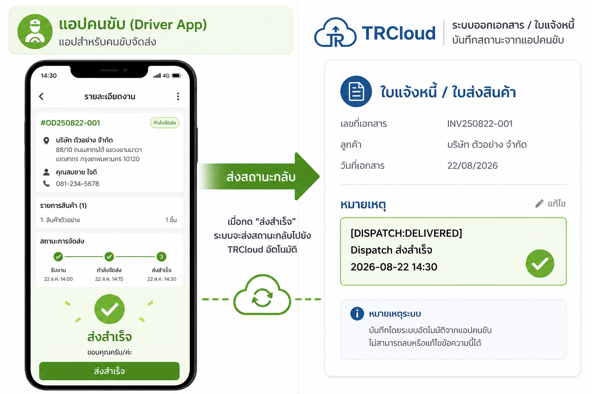
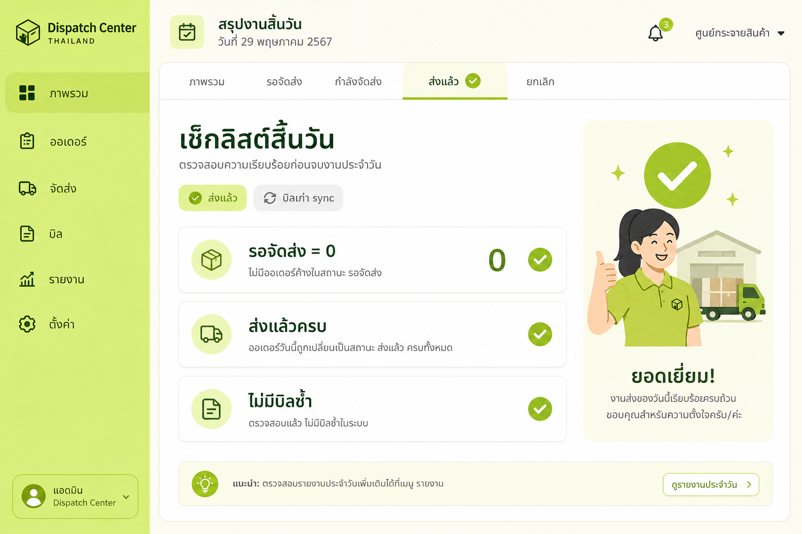

1 ดึง TRCloud
2 นับร้าน
3 เลือกเขต
4 จัดรถ
5 พิมพ์ใบส่ง
6 คนขับส่ง
7 เช็คครบ
รู้จักหมวดบิลในหน้า “วันนี้”
แยกงานรอส่ง กับงานที่ส่งแล้ว — บิลเก่าจาก sync จะไม่รกคิว
รอจัดส่ง
งานที่ยังต้องจัดรถวันนี้
ติ๊กเลือกได้ · มี chip เขต · กดจัดรถอัตโนมัติ
ส่งแล้ว
ส่งสำเร็จแล้ววันนี้
คนขับกดส่งสำเร็จ · ระบบเขียนเครื่องหมายกลับ TRCloud
บิลเก่า sync
บิลเก่าที่ดึงมาแล้วปิดอัตโนมัติ
เกิน 2 วัน หรือ TRCloud มีเครื่องหมาย [DISPATCH:DELIVERED] แล้ว — ไม่โผล่ซ้ำในคิว

รูปที่ 1 — หน้า วันนี้: สลับแท็บ รอจัดส่ง / ส่งแล้ว · ติ๊กเลือกหลายเขตจาก chip หรือ dropdown ใต้คอลัมน์เขต
ตอนเช้า — เตรียมงาน
เปิดระบบ → เลือกวันที่ → ดึงบิล → นับร้านที่ต้องส่ง
-
เปิดเว็บ GV Dispatch
เลือก วันที่ทำงาน มุมบน (ปฏิทิน) ให้ตรงกับวันส่งจริง
-
เข้าเมนู วันนี้
ดูตัวเลข รอส่ง X ที่ · Y เขต ใต้หัวข้อ — คือจำนวนร้านที่ยังต้องจัดรถ
-
กด รีเฟรช หรือดึงจาก TRCloud
ระบบ sync อัตโนมัติทุก 3 นาที · หรือเข้า ตั้งค่า → TRCloud ออเดอร์ → กด ดึงออเดอร์ → งานส่ง
-
เช็คเลข PO / เลขบิล / มูลค่า
คอลัมน์ เลขที่เอกสารอ้างอิง = PO ลูกค้า · เลขบิล = KSO/BSO · ค้นหาด้วยชื่อร้านหรือเขตได้
จำไว้: ก่อนจัดรถ ดูแท็บ รอจัดส่ง (X) ให้รู้ว่าวันนี้มีกี่ร้าน — อย่าข้ามขั้นตอนนี้
ดึงบิลจาก TRCloud — ไม่ให้ซ้ำ
ระบบจัดหมวดบิลอัตโนมัติตอน sync
-
บิลใหม่ → รอจัดส่ง
SO วันนี้ / ย้อนหลังไม่เกิน 2 วัน จะเข้าแท็บ รอจัดส่ง
-
บิลที่ส่งแล้วใน TRCloud → ข้าม
ถ้า invoice_note มี [DISPATCH:DELIVERED] หรือส่งครบใน TRCloud แล้ว → บันทึกเป็น ส่งแล้ว ไม่เข้าคิวซ้ำ
-
บิลเก่าเกิน 2 วัน → ปิดอัตโนมัติ
แสดงในแท็บ ส่งแล้ว ป้าย บิลเก่า sync — ไม่รบกวนการจัดรถวันนี้
-
อ่านผลหลังดึง
หน้า TRCloud แสดง: ใหม่ · อัปเดต · ข้าม · ส่งแล้วใน TRCloud — ใช้เช็คว่ามีบิลซ้ำหรือไม่

รูปที่ 2 — ตั้งค่า → TRCloud ออเดอร์ · เลือกช่วงวันที่แล้วกดดึง · ดูจำนวนใหม่/ข้าม/ส่งแล้วใน TRCloud
หมายเหตุ: อย่าเปลี่ยน webhook SO ใน TRCloud ที่ชี้ gvtools — ระบบนี้ดึงแยกโดยไม่แย่งของเขา
จัดรถ — เลือกหลายเขตแล้วจัดอัตโนมัติ
ติ๊กเลือกเขตใกล้กัน → รวมเป็นรอบส่ง → ยืนยัน
-
ติ๊กเลือกเขต (หลายเขตได้)
กด chip เขตด้านบน เช่น บางแค + หนองแขม · หรือเปิด dropdown ใต้คอลัมน์ เขต แล้วติ๊กหลายเขต
-
งานด่วน 1 ร้าน
กด จัดทีละงาน ที่แถวงาน → เลือกรถ + คนขับ → ยืนยัน
-
หลายร้านพร้อมกัน
ติ๊ก checkbox ร้านที่ต้องการ → กด จัดรถอัตโนมัติ · หรือเข้าเมนู จัดรถ
-
กด “จัดเส้นทางอัตโนมัติ” แล้ว “ยืนยันการส่ง”
ระบบคำนวณระยะทางทุกจุด (ไป-กลับ) · ค่าน้ำมันตามระยะจริงทุกร้านในรอบ · ดูรอบที่แท็บ รอบส่งวันนี้

รูปที่ 3 — เลือกหลายเขต → จัดเส้นทางอัตโนมัติ → ตรวจจำนวนจุดให้เท่ากับร้านที่เลือก
เช็คไม่ให้ส่งไม่ครบ: รวมจุดส่งทุกคัน ต้องเท่ากับจำนวนร้านที่ติ๊กไว้ — ถ้าไม่เท่า = ยังมีร้านหลุด
พิมพ์ใบส่ง — พิมพ์ที่ไหน
พิมพ์ก่อนออกรถ ให้คนขับถือไปส่งทีละร้าน
-
ใบส่งต่อรอบ (แนะนำ)
เมนู รายงาน → ประเภท สรุปรอบส่ง → กดสร้างรายงาน
ที่แถวรอบส่ง กด 🖨️ พิมพ์ = ใบส่งของรอบนั้น (รายชื่อร้าน / ลำดับจุด / ระยะทาง)
-
ดูรอบก่อนพิมพ์
เมนู จัดรถ → แท็บ รอบส่งวันนี้ → กด รายละเอียด ดูว่ารอบนี้กี่ร้าน / กี่ชิ้น
-
เปรียบเทียบ GPS จริง (ถ้ารถมี Cartrack)
เมนู รายงาน → เปรียบเทียบ GPS จริง — ดูว่ารถวิ่งไปไหนจริง เทียบกับแผน
จำที่พิมพ์: ใบส่งรอบรถ = หน้า รายงาน (ปุ่มพิมพ์ที่แถวรอบ)
คนขับ — ส่งของ + ส่งสถานะกลับ TRCloud
อัปเดตทีละร้าน · ระบบใส่เครื่องหมายส่งแล้วให้อัตโนมัติ
-
เปิดโหมดคนขับ
มุมบนขวา กด โหมดคนขับ → ส่งลิงก์ / QR ให้มือถือคนขับ · แตะเลือกชื่อตัวเอง
-
ถึงร้าน → กด “ส่งสำเร็จ”
ถ่ายรูปหลักฐานได้ · ถ้าส่งไม่ได้ บันทึก “ส่งไม่สำเร็จ” พร้อมเหตุผล
-
ระบบเขียนกลับ TRCloud อัตโนมัติ
เมื่อส่งสำเร็จ ระบบใส่ [DISPATCH:DELIVERED] Dispatch ส่งสำเร็จ … ลง invoice_note ของ SO/IV · ครั้งถัดไปที่ sync จะไม่ดึงบิลนี้มาซ้ำ
-
สำนักงานดูความคืบหน้า
เมนู ติดตาม → แท็บ ภาพรวมรถ · รถที่มี Cartrack แสดง GPS สด

รูปที่ 4 — กดส่งสำเร็จบนมือถือ → ระบบเขียน [DISPATCH:DELIVERED] กลับ TRCloud · sync ครั้งถัดไปไม่โผล่ซ้ำ
จบวัน — เช็คว่าส่งครบ ไม่มีบิลซ้ำ
สลับแท็บ รอจัดส่ง / ส่งแล้ว ให้ตัวเลขสมเหตุสมผล
- แท็บ รอจัดส่ง — ต้องเป็น 0 หรือรู้สาเหตุทุกใบที่ค้าง (เลื่อนวัน / ส่งไม่สำเร็จ)
- แท็บ ส่งแล้ว — นับร้านที่ส่งสำเร็จวันนี้ เทียบกับที่จัดรถตอนเช้า
- กรอง บิลเก่า sync — ดูบิลเก่าที่ปิดอัตโนมัติ ไม่ปนกับงานวันนี้
- เมนู ติดตาม — รอบที่ยัง “กำลังส่ง” ต้องว่างหรือรู้ว่าค้างที่ไหน
- ถ้ามีร้านค้าง: จัดรอบเย็น / เลื่อนวัน / บันทึกส่งไม่สำเร็จ — อย่าปล่อยเงียบในรอจัดส่ง

รูปที่ 5 — จบวัน: รอจัดส่ง = 0 · ส่งแล้วครบ · บิลเก่า sync แยกไม่รบกวนคิว
กฎสั้น ๆ: ร้านตอนเช้า (รอจัดส่ง) ≈ ส่งแล้ว + ส่งไม่สำเร็จ + ค้างที่รู้สาเหตุ — ห้ามมีร้านหายเงียบ · ห้ามบิลส่งแล้วโผล่ซ้ำหลัง sync
เมนูที่ต้องใช้ประจำ
จำแค่เมนูเหล่านี้ก็ส่งงานได้ทั้งวัน